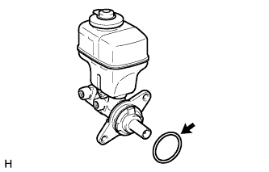
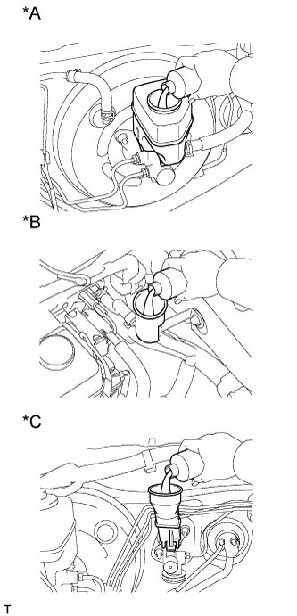

ГЛАВНЫЙ ЦИЛИНДР ТОРМОЗНОЙ СИСТЕМЫ > УСТАНОВКА |
| 1. УСТАНОВИТЕ ГЛАВНЫЙ ЦИЛИНДР ТОРМОЗНОЙ СИСТЕМЫ В СБОРЕ |
Для моделей с левосторонним рулевым управлением:
Установите кольцевое уплотнение на главный цилиндр тормозной системы в сборе.
Установите главный цилиндр тормозной системы и закрепите его 2 гайками.
С помощью разрезной головки подсоедините 2 трубопровода тормозной системы к главному цилиндру тормозной системы в сборе.
Установите зажим и подсоедините разъем.
Для моделей с правосторонним рулевым управлением:
|  |
Установите кольцевое уплотнение на главный цилиндр тормозной системы в сборе.
Установите главный цилиндр тормозной системы и новый зажим на усилитель тормозной системы и закрепите их 2 гайками.
С помощью разрезной головки подсоедините 2 трубопровода тормозной системы к главному цилиндру тормозной системы в сборе.
Подсоедините разъем.
| 2. ПОДСОЕДИНИТЕ ТРУБКУ СЦЕПЛЕНИЯ (для моделей с левосторонним рулевым управлением и механической трансмиссией) |
Подсоедините трубку сцепления к бачку главного цилиндра тормозной системы в сборе и закрепите ее фиксатором.
| 3. УСТАНОВИТЕ БЛОК УПРАВЛЕНИЯ РАБОЧИМИ ЦИЛИНДРАМИ ТОРМОЗОВ В СБОРЕ (для моделей с правосторонним рулевым управлением) |
Установите блок управления рабочими цилиндрами тормозов в сборе (Нажмите здесь).
| 4. УСТАНОВИТЕ КОРПУС ВОЗДУШНОГО ФИЛЬТРА (для моделей с 2TR-FE и правосторонним рулевым управлением) |
Установите корпус воздушного фильтра (Нажмите здесь).
| 5. УСТАНОВИТЕ КОРПУС ВОЗДУШНОГО ФИЛЬТРА В СБОРЕ (для моделей с 5L-E и правосторонним рулевым управлением) |
Установите корпус воздушного фильтра в сборе (Нажмите здесь).
| 6. ПРОКАЧАЙТЕ ТОРМОЗНУЮ СИСТЕМУ |
Снимите крышку наливного отверстия бачка главного цилиндра тормозной системы в сборе.
Добавляйте тормозную жидкость до тех пор, пока ее уровень не окажется между отметками MIN и MAX бачка.
С помощью разрезной головки отсоедините 2 трубопровода тормозной системы от главного цилиндра.
Медленно нажмите и удерживайте педаль тормоза.
Закройте отверстия трубопроводов пальцами, а затем отпустите педаль тормоза.
Уберите пальцы, медленно нажмите и удерживайте педаль тормоза, снова закройте отверстия трубопроводов пальцами, а затем отпустите педаль тормоза. Повторите эту операцию 3-4 раза.
С помощью разрезной головки подсоедините 2 трубопровода тормозной системы к главному цилиндру тормозной системы в сборе.
Ослабьте прокачной штуцер колесного тормозного цилиндра правого переднего тормоза.
Многократно нажимая на педаль тормоза, удалите воздух из прокачного штуцера колесного тормозного цилиндра правого переднего тормоза.
Когда воздух будет удален полностью, затяните прокачной штуцер, удерживая нажатой педаль тормоза.
Удалите воздух из прокачного штуцера колесного тормозного цилиндра левого переднего дискового тормоза таким же образом, как с правой стороны.
Ослабьте прокачной штуцер колесного тормозного цилиндра правого заднего тормоза.
Многократно нажимая на педаль тормоза, удалите воздух из прокачного штуцера колесного тормозного цилиндра правого заднего тормоза.
Когда воздух будет удален полностью, затяните прокачной штуцер, удерживая нажатой педаль тормоза.
Удалите воздух из прокачного штуцера колесного тормозного цилиндра левого заднего дискового тормоза таким же образом, как с правой стороны.
Выключите зажигание и подсоедините портативный диагностический прибор к разъему DLC3.
Включите зажигание и портативный диагностический прибор.
Войдите в следующие меню: Chassis / ABS/VSC/TRC / Utility / Air Bleeding.
Выберите и запустите операцию "Inhalation" (всасывание) на экране Air Bleeding (прокачка) портативного диагностического прибора.
Ослабьте прокачной штуцер правого переднего колеса.*1
Приведите в действие блок управления с помощью портативного диагностического прибора.
С помощью экрана портативного диагностического прибора убедитесь, что операция прекратилась.
Затяните прокачной штуцер.*2
Повторяйте рассмотренные выше процедуры с *1 по *2, пока воздух не будет удален полностью.
Затяните прокачной штуцер.
Удалите воздух из системы правого заднего колеса, действуя таким же образом, как для правого переднего колеса.
Выберите и запустите операцию "Decrease" (понижение) на экране Air Bleeding (прокачка) портативного диагностического прибора.
Ослабьте прокачной штуцер правого переднего колеса.*3
С помощью портативного диагностического прибора приведите в действие блок управления и одновременно до упора нажмите и удерживайте педаль тормоза.
Затяните прокачной штуцер и отпустите педаль тормоза.*4
Повторяйте рассмотренные выше процедуры с *3 по *4, пока воздух не будет удален полностью.
Затяните прокачной штуцер.
Удалите воздух из систем 3 других колес, действуя таким же образом, как для правого переднего колеса.
Повторите процедуру удаления воздуха из трубопровода тормозной системы, многократно нажимая на педаль тормоза.
Проверьте, нет ли утечек тормозной жидкости.
Проверьте уровень жидкости в бачке (Нажмите здесь).
| 7. ЗАПОЛНИТЕ БАЧОК ТОРМОЗНОЙ ЖИДКОСТЬЮ (для моделей с левосторонним рулевым управлением) |
|  |
Залейте тормозную жидкость в бачок.
| *A | Для моделей с левосторонним рулевым управлением (для моделей с 2TR-FE, 5L-E) |
| *B | Для моделей с левосторонним рулевым управлением (с 1GR-FE, 1KD-FTV) |
| *C | Для моделей с правосторонним рулевым управлением |
| 8. УДАЛИТЕ ВОЗДУХ ИЗ ТРУБОПРОВОДА ПРИВОДА СЦЕПЛЕНИЯ (для моделей с левосторонним рулевым управлением) |
Снимите колпачок прокачного штуцера рабочего цилиндра сцепления.
Подсоедините виниловую трубку к прокачному штуцеру (штуцеру для удаления воздуха).
Несколько раз нажмите педаль сцепления, а затем ослабьте прокачной штуцер при нажатой педали.
Когда жидкость прекратит вытекать, заверните прокачной штуцер и отпустите педаль сцепления.
Повторяйте 2 описанных выше операции до тех пор, пока из жидкости не будет удален весь воздух.
Затяните прокачной штуцер.
Установите колпачок прокачного штуцера.
Проверьте, чтобы из трубопровода системы сцепления был удален весь воздух.
| 9. ПРОВЕРЬТЕ УРОВЕНЬ ЖИДКОСТИ В БАЧКЕ (для моделей с левосторонним рулевым управлением) |
Проверьте уровень жидкости.
Если уровень тормозной жидкости мал, проверьте наличие утечек и тормозные колодки дискового тормоза. При необходимости долейте тормозную жидкость в бачок после замены или ремонта.
| 10. ПРОВЕРЬТЕ, НЕТ ЛИ УТЕЧЕК ТОРМОЗНОЙ ЖИДКОСТИ ИЗ ТРУБОПРОВОДА ПРИВОДА СЦЕПЛЕНИЯ (для моделей с левосторонним рулевым управлением) |